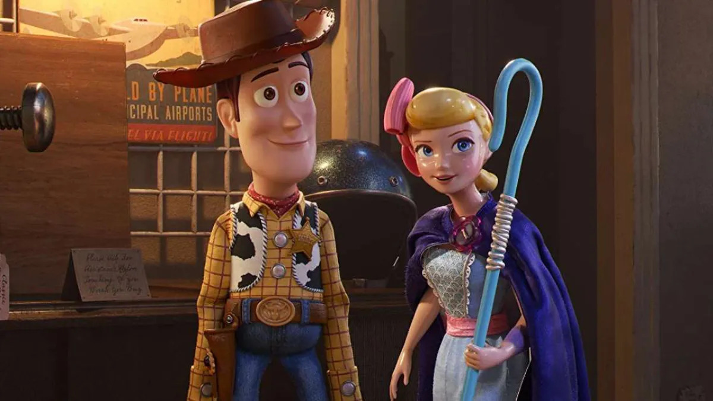

玩具總動員4
Toy Story 4 (2019) · 導演：喬許·庫利 (Josh Cooley)
「胡迪最偉大的一刻，不是永遠守候在某個孩子身邊，而是他終於學會放下使命，為自己的人生開啟全新篇章。」
★ 多維度深度評析
綜合評析指數：9.2 / 10極力推薦觀看群體
- 伴隨《玩具總動員》系列走過童年與青春歲月的成年觀眾
- 正處於人生重大放手階段、面對身份轉折的探索者
- 對皮克斯極致材質與光影渲染技術著迷的影迷
可能需要心理準備
- 若認定第三部安弟送走玩具即為完美句點，需調適心態
- 老班底配角戲份相對縮減，主線集中於胡迪、牧羊女與叉奇
無雷簡介與推薦指南
在安弟將心愛的玩具轉交給小女孩邦妮之後，胡迪逐漸退出了房間的核心舞台。當邦妮在幼稚園用免洗叉子與廢棄物組裝出新夥伴「叉奇」（Forky）時，深感自己是垃圾的叉奇引發了一連串脫逃騷動。在家庭公路旅行的途中，胡迪義無反顧跳車追逐叉奇，並在一座充滿回憶的古董店與熱鬧的遊樂嘉年華會上，意外重逢了多年未見的舊愛——牧羊女寶貝（Bo Peep）。
皮克斯再次展現了業界頂尖的擬真材質渲染，瓷器、毛線與雨中反射的光影無懈可擊。而比視覺更震撼的，是故事跳脫了前三部「陪伴孩子」的宿命框架，直面自我實現與放手告別的人生課題。
⚠️
深度劇情剖析與結局討論（含重大劇透）
本區塊包含胡迪的身份轉折、蓋比蓋比的救贖與旋轉木馬前的世紀告別
▼
深度劇情剖析與結局討論（含重大劇透）
本區塊包含胡迪的身份轉折、蓋比蓋比的救贖與旋轉木馬前的世紀告別
#1 叉奇的存在危機：被賦予愛，才成為了「自己」
叉奇一開始執著跳進垃圾桶，因為垃圾意味著無負擔、安全與終點。胡迪耐心地引導他明白：正是因為邦妮在叉奇腳底寫下了名字，給予了它靈魂與被需要的意義。這段看似滑稽的追逐，實質探討了生命存在的價值並非由出生材質決定，而是由愛與連結所定義。
#2 蓋比蓋比的反轉：瑕疵玩具的溫柔救贖
看似陰森的反派洋娃娃蓋比蓋比，她所有的執念只為換取一個完好的發聲盒，換取一個被小女孩擁抱的可能。胡迪最終自願將發聲盒讓給她，然而現實卻是殘酷的——被修好的蓋比依然遭到遺棄。幸運的是，在迷路小女孩的抽泣聲中，蓋比找到了真正需要她的人。皮克斯在此打破了「非黑即白」的角色偏見。
#3 胡迪的離別：飛向宇宙，浩瀚無垠
第三部是安弟長大，第四部則是胡迪長大。當巴斯光年對胡迪說出那句：「她（邦妮）會沒事的，內心的聲音會指引你」，胡迪終於卸下了陪伴整整四部電影的執念。他將象徵責任的警長徽章交給翠絲，選擇留在嘉年華與寶貝一起成為自由的流浪玩具。在摩天輪下，胡迪與巴斯隔空說出：「飛向宇宙，浩瀚無垠」，為所有曾伴隨皮克斯長大的孩子們獻上了最催淚也最成熟的成人禮。